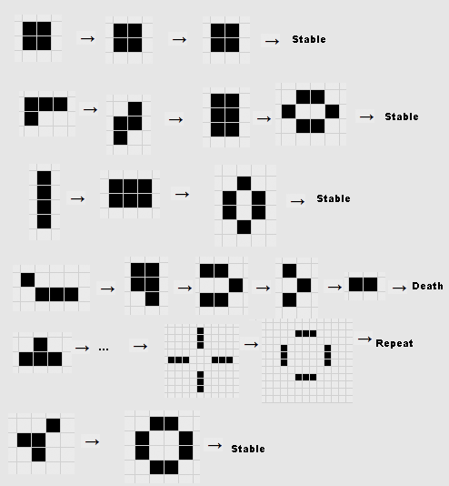

<!DOCTYPE html>
<html lang="en">
  <head>
    <meta charset="utf-8" />
    <meta name="viewport" content="width=device-width, initial-scale=1.0, maximum-scale=1.0, user-scalable=no" />

    <title>Learning machine learning</title>
    <link rel="stylesheet" href="dist/reveal.css" />
    <link rel="stylesheet" href="dist/theme/black.css" id="theme" />
    <link rel="stylesheet" href="plugin/highlight/zenburn.css" />
	<link rel="stylesheet" href="css/layout.css" />
	<link rel="stylesheet" href="plugin/customcontrols/style.css">
	<link rel="stylesheet" href="plugin/chalkboard/style.css">

	<link rel="stylesheet" href="plugin/reveal-pointer/pointer.css" />


    <script defer src="dist/fontawesome/all.min.js"></script>

	<script type="text/javascript">
		var forgetPop = true;
		function onPopState(event) {
			if(forgetPop){
				forgetPop = false;
			} else {
				parent.postMessage(event.target.location.href, "app://obsidian.md");
			}
        }
		window.onpopstate = onPopState;
		window.onmessage = event => {
			if(event.data == "reload"){
				window.document.location.reload();
			}
			forgetPop = true;
		}

		function fitElements(){
			const itemsToFit = document.getElementsByClassName('fitText');
			for (const item in itemsToFit) {
				if (Object.hasOwnProperty.call(itemsToFit, item)) {
					var element = itemsToFit[item];
					fitElement(element,1, 1000);
					element.classList.remove('fitText');
				}
			}
		}

		function fitElement(element, start, end){

			let size = (end + start) / 2;
			element.style.fontSize = `${size}px`;

			if(Math.abs(start - end) < 1){
				while(element.scrollHeight > element.offsetHeight){
					size--;
					element.style.fontSize = `${size}px`;
				}
				return;
			}

			if(element.scrollHeight > element.offsetHeight){
				fitElement(element, start, size);
			} else {
				fitElement(element, size, end);
			}		
		}


		document.onreadystatechange = () => {
			fitElements();
			if (document.readyState === 'complete') {
				if (window.location.href.indexOf("?export") != -1){
					parent.postMessage(event.target.location.href, "app://obsidian.md");
				}
				if (window.location.href.indexOf("print-pdf") != -1){
					let stateCheck = setInterval(() => {
						clearInterval(stateCheck);
						window.print();
					}, 250);
				}
			}
	};


        </script>
  </head>
  <body>
    <div class="reveal">
      <div class="slides"><section  data-markdown><script type="text/template"><!-- .slide: class="drop" -->
<div class="" style="position: absolute; left: 0px; top: 0px; height: 1200px; width: 1920px; min-height: 1200px; display: flex; flex-direction: column; align-items: center; justify-content: center" absolute="true">

# Learning Machine Learning
### Artificial Intelligence and Society  ― week 2


[Dr Daniel Chávez Heras](https://movingpixel.net/)


[6AAVC307](https://keats.kcl.ac.uk/course/view.php?id=110858) | [7AAVCD42](https://keats.kcl.ac.uk/course/view.php?id=108767)

2023-24
</div></script></section><section  data-markdown><script type="text/template"><!-- .slide: class="drop" -->
<div class="" style="position: absolute; left: 0px; top: 0px; height: 1200px; width: 1920px; min-height: 1200px; display: flex; flex-direction: column; align-items: center; justify-content: center" absolute="true">


</div></script></section><section ><section data-markdown><script type="text/template"><!-- .slide: class="drop" -->
<div class="" style="position: absolute; left: 0px; top: 0px; height: 1200px; width: 1920px; min-height: 1200px; display: flex; flex-direction: column; align-items: center; justify-content: center" absolute="true">

## What is Machine Learning?

>An agent is learning if it improves its performance on future tasks after making observations about the world.

\- Peter Norvig & Stuart J. Russell
</div></script></section><section data-markdown><script type="text/template"><!-- .slide: class="drop" -->
<div class="" style="position: absolute; left: 0px; top: 0px; height: 1200px; width: 1920px; min-height: 1200px; display: flex; flex-direction: column; align-items: center; justify-content: center" absolute="true">

## [Conway's _Game of Life_](https://en.wikipedia.org/wiki/Conway's_Game_of_Life)

content/images/dfeb105ddf14a099932ed12339ecb436_MD5.png

</div>

<aside class="notes"><p>John Horton Conway in 1970.[1] It is a zero-player game,[2][3] meaning that its evolution is determined by its initial state, requiring no further input. One interacts with the Game of Life by creating an initial configuration and observing how it evolves.</p>
<p> Rules:</p>
<ol>
<li>Any live cell with fewer than two live neighbours dies, as if by underpopulation.</li>
<li>Any live cell with two or three live neighbours lives on to the next generation.</li>
<li>Any live cell with more than three live neighbours dies, as if by overpopulation.</li>
<li>Any dead cell with exactly three live neighbours becomes a live cell, as if by reproduction.</li>
</ol>
</aside></script></section></section><section  data-markdown><script type="text/template"><!-- .slide: class="drop" -->
<div class="" style="position: absolute; left: 0px; top: 0px; height: 1200px; width: 1920px; min-height: 1200px; display: flex; flex-direction: column; align-items: center; justify-content: center" absolute="true">

## No, really, what is Machine Learning?

>A machine’s learning algorithm enables it to **identify patterns in observed data**, **build models** that explain the world, and predict things **without having explicit pre-programmed rules** and models.

\- Vishal Maini & Samer Sabri
</div></script></section><section  data-markdown><script type="text/template"><!-- .slide: class="drop" -->
<div class="" style="position: absolute; left: 0px; top: 0px; height: 1200px; width: 1920px; min-height: 1200px; display: flex; flex-direction: column; align-items: center; justify-content: center" absolute="true">

## Why Machine Learning?

>All models are wrong, some are useful.

\- George Box
</div></script></section><section ><section data-markdown><script type="text/template"><!-- .slide: class="drop" -->
<div class="" style="position: absolute; left: 0px; top: 0px; height: 1200px; width: 1920px; min-height: 1200px; display: flex; flex-direction: column; align-items: center; justify-content: center" absolute="true">

## Why now?

-  AI is linked to an older history of statistics:
	- Thomas Bayes (1763) --> Pierre-Simon Laplace (1812)
	- Adrien-Marie Legendre (1805)
	- Andrey Markov (1913)
</div>

<aside class="notes"><p>Bayes: &quot;the probability of an event, based on prior knowledge of conditions that might be related to the event&quot;</p>
</aside></script></section><section data-markdown><script type="text/template"><!-- .slide: class="drop" -->
<div class="" style="position: absolute; left: 0px; top: 0px; height: 1200px; width: 1920px; min-height: 1200px; display: flex; flex-direction: column; align-items: center; justify-content: center" absolute="true">


</div></script></section><section data-markdown><script type="text/template"><!-- .slide: class="drop" -->
<div class="" style="position: absolute; left: 0px; top: 0px; height: 1200px; width: 1920px; min-height: 1200px; display: flex; flex-direction: column; align-items: center; justify-content: center" absolute="true">


</div></script></section><section data-markdown><script type="text/template"><!-- .slide: class="drop" -->
<div class="" style="position: absolute; left: 0px; top: 0px; height: 1200px; width: 1920px; min-height: 1200px; display: flex; flex-direction: column; align-items: center; justify-content: center" absolute="true">


</div></script></section></section><section ><section data-markdown><script type="text/template"><!-- .slide: class="drop" -->
<div class="" style="position: absolute; left: 0px; top: 0px; height: 1200px; width: 1920px; min-height: 1200px; display: flex; flex-direction: column; align-items: center; justify-content: center" absolute="true">

### 1950 -60s

- 1951, Minsky and Edmond’s [Stochastic Neural Analog Reinforcement Computer](https://en.wikipedia.org/wiki/Stochastic_Neural_Analog_Reinforcement_Calculator)(SNARC) learned from experience and was used to search a maze
- Frank Rosenblatt's [Perceptron](https://en.wikipedia.org/wiki/Perceptron) (1957) was intended to be a machine, rather than a program, and was designed for image recognition
- Arthur Samuel created a program in 1959 that [helped an IBM computer get better at checkers](https://www.ibm.com/ibm/history/ibm100/us/en/icons/ibm700series/impacts/) the more it played
- In 1960, the first neural network applied to a real world problem, [Stanford’s (M)ADALINE](https://web.stanford.edu/class/ee373b/30years.pdf) used an adaptive filter to remove echoes over phone lines. [Read more about ADALINEs](https://pabloinsente.github.io/the-adaline)
</div>

<aside class="notes"><p>The Stochastic Neural Analog Reinforcement Calculator (SNARC) is a neural-net machine designed by Marvin Lee Minsky.[1] Prompted by a letter from Minsky, George Armitage Miller gathered the funding for the project from the Air Force Office of Scientific Research in the summer of 1951 with the work to be carried out by Minsky, who was then a graduate student in mathematics at Princeton University. At the time, a physics graduate student at Princeton, Dean S. Edmonds,[2] volunteered that he was good with electronics and therefore Minsky brought him onto the project.</p>
</aside></script></section><section data-markdown><script type="text/template"><!-- .slide: class="drop" -->
<div class="" style="position: absolute; left: 0px; top: 0px; height: 1200px; width: 1920px; min-height: 1200px; display: flex; flex-direction: column; align-items: center; justify-content: center" absolute="true">


</div></script></section></section><section  data-markdown><script type="text/template"><!-- .slide: class="drop" -->
<div class="" style="position: absolute; left: 0px; top: 0px; height: 1200px; width: 1920px; min-height: 1200px; display: flex; flex-direction: column; align-items: center; justify-content: center" absolute="true">


</div></script></section><section  data-markdown><script type="text/template"><!-- .slide: class="drop" -->
<div class="" style="position: absolute; left: 0px; top: 0px; height: 1200px; width: 1920px; min-height: 1200px; display: flex; flex-direction: column; align-items: center; justify-content: center" absolute="true">

### 21st century neural revival

- Access to vast amounts of data
- Powerful new hardware to train them ([GPU](https://en.wikipedia.org/wiki/Graphics_processing_unit))
- Key figures: [Geoffrey Hinton](https://en.wikipedia.org/wiki/Geoffrey_Hinton), [Yoshua Bengio](https://en.wikipedia.org/wiki/Yoshua_Bengio) and [Yann LeCun](https://en.wikipedia.org/wiki/Yann_LeCun)
</div></script></section><section  data-markdown><script type="text/template"><!-- .slide: class="drop" -->
<div class="" style="position: absolute; left: 0px; top: 0px; height: 1200px; width: 1920px; min-height: 1200px; display: flex; flex-direction: column; align-items: center; justify-content: center" absolute="true">


</div></script></section><section  data-markdown><script type="text/template"><!-- .slide: class="drop" -->
<div class="" style="position: absolute; left: 0px; top: 0px; height: 1200px; width: 1920px; min-height: 1200px; display: flex; flex-direction: column; align-items: center; justify-content: center" absolute="true">

## How does it work?
</div></script></section><section ><section data-markdown><script type="text/template"><!-- .slide: class="drop" -->
<div class="" style="position: absolute; left: 0px; top: 0px; height: 1200px; width: 1920px; min-height: 1200px; display: flex; flex-direction: column; align-items: center; justify-content: center" absolute="true">


</div></script></section><section data-markdown><script type="text/template"><!-- .slide: class="drop" -->
<div class="" style="position: absolute; left: 0px; top: 0px; height: 1200px; width: 1920px; min-height: 1200px; display: flex; flex-direction: column; align-items: center; justify-content: center" absolute="true">


</div></script></section></section><section  data-markdown><script type="text/template"><!-- .slide: class="drop" -->
<div class="" style="position: absolute; left: 0px; top: 0px; height: 1200px; width: 1920px; min-height: 1200px; display: flex; flex-direction: column; align-items: center; justify-content: center" absolute="true">

## General principles

1. **Think** about the kind of problem you are trying to solve
2. **Decide** how to represent phenomena from the real world in numbers
3. **Select** a model (an algorithmic template to link inputs and outputs)
4. **Apply** the model to your dataset
5. **Evaluate**, rinse and **repeat**
</div></script></section><section  data-markdown><script type="text/template"><!-- .slide: class="drop" -->
<div class="" style="position: absolute; left: 0px; top: 0px; height: 1200px; width: 1920px; min-height: 1200px; display: flex; flex-direction: column; align-items: center; justify-content: center" absolute="true">


</div></script></section><section  data-markdown><script type="text/template"><!-- .slide: class="drop" -->
<div class="" style="position: absolute; left: 0px; top: 0px; height: 1200px; width: 1920px; min-height: 1200px; display: flex; flex-direction: column; align-items: center; justify-content: center" absolute="true">

## Supervised learning

> Uses **labelled datasets** to train algorithms that to classify data or predict outcomes accurately

<div class="callout callout-color1">
<div class="callout-title">
<div class="callout-icon">

<i class="fas fa-info-circle" ></i>


</div>
<div class="callout-title-inner">

**Tasks**

</div>
</div>
<div class="callout-content">

* Classification

* Regression

</div>
</div>

Examples:
- [Hand-written digit classification (MNIST)](https://en.wikipedia.org/wiki/MNIST_database) 
- [Random forest](http://www.r2d3.us/visual-intro-to-machine-learning-part-1/)

<!-- .element: style="width: 40%" -->
</div></script></section><section  data-markdown><script type="text/template"><!-- .slide: class="drop" -->
<div class="" style="position: absolute; left: 0px; top: 0px; height: 1200px; width: 1920px; min-height: 1200px; display: flex; flex-direction: column; align-items: center; justify-content: center" absolute="true">

## Unsupervised learning

> Uses machine learning algorithms to analyze and cluster **unlabeled datasets** to discover hidden patterns or data groupings

<div class="callout callout-color1">
<div class="callout-title">
<div class="callout-icon">

<i class="fas fa-info-circle" ></i>


</div>
<div class="callout-title-inner">

**Tasks**

</div>
</div>
<div class="callout-content">

* Clustering

* Dimentionality reduction

</div>
</div>

Examples:
- [Collection Space Navigator](https://collection-space-navigator.github.io/CSN/)
- [t-SNE](https://distill.pub/2016/misread-tsne/)
- [K-means](https://colab.research.google.com/github/jakevdp/PythonDataScienceHandbook/blob/master/notebooks/05.11-K-Means.ipynb#scrollTo=dhVBqeoXVpMU)
<!-- .element: style="width: 40%" -->
</div></script></section><section  data-markdown><script type="text/template"><!-- .slide: class="drop" -->
<div class="" style="position: absolute; left: 0px; top: 0px; height: 1200px; width: 1920px; min-height: 1200px; display: flex; flex-direction: column; align-items: center; justify-content: center" absolute="true">

## Reinforcement learning

> Uses an agents to learn through trial and error using feedback from their actions

<div class="callout callout-color8">
<div class="callout-title">
<div class="callout-icon">

<i class="fas fa-list" ></i>


</div>
<div class="callout-title-inner">

**Tasks**

</div>
</div>
<div class="callout-content">

* Robot navigation

* Gaming AI

</div>
</div>

Examples:
- [Alpha Go](https://jonathan-hui.medium.com/alphago-how-it-works-technically-26ddcc085319)
- [Navigation simulation](https://youtu.be/Aut32pR5PQA?si=1i4CE2g4MOtrs1hg)
- [Albert learns to walk](https://youtu.be/L_4BPjLBF4E?si=4VX-6U61-LFopWDY)

<!-- .element: style="width: 40%" -->
</div></script></section><section  data-markdown><script type="text/template"><!-- .slide: class="drop" -->
<div class="" style="position: absolute; left: 0px; top: 0px; height: 1200px; width: 1920px; min-height: 1200px; display: flex; flex-direction: column; align-items: center; justify-content: center" absolute="true">

## Key technical terms

- Parameters and  hyper-parameters
- Compression and representation
- Bias (too simple) and variance (too complex)
- Overfitting and generalisation
</div></script></section><section  data-markdown><script type="text/template"><!-- .slide: class="drop" -->
<div class="" style="position: absolute; left: 0px; top: 0px; height: 1200px; width: 1920px; min-height: 1200px; display: flex; flex-direction: column; align-items: center; justify-content: center" absolute="true">

## Human decisions matter


> Every method has its strengths and weaknesses, its elegance and its clumsiness, its subtle patterns of success and failure. These things ought to be the subject of intellectual discussion and dispute, both in particular cases and as general matters of methodology —and not as a separate category of research but as something continuous with the presentation of technical projects 

\-Philip Agre in Computation and Human Experience (1997, p.14)
</div></script></section><section  data-markdown><script type="text/template"><!-- .slide: class="drop" -->
<div class="" style="position: absolute; left: 0px; top: 0px; height: 1200px; width: 1920px; min-height: 1200px; display: flex; flex-direction: column; align-items: center; justify-content: center" absolute="true">

## Questions?
</div></script></section></div>
    </div>

    <script src="dist/reveal.js"></script>

    <script src="plugin/markdown/markdown.js"></script>
    <script src="plugin/highlight/highlight.js"></script>
    <script src="plugin/zoom/zoom.js"></script>
    <script src="plugin/notes/notes.js"></script>
    <script src="plugin/math/math.js"></script>
	<script src="plugin/mermaid/mermaid.js"></script>
	<script src="plugin/chart/chart.min.js"></script>
	<script src="plugin/chart/plugin.js"></script>
	<script src="plugin/menu/menu.js"></script>
	<script src="plugin/customcontrols/plugin.js"></script>
	<script src="plugin/chalkboard/plugin.js"></script>
	<script src="plugin/reveal-pointer/pointer.js"></script>

    <script>
      function extend() {
        var target = {};
        for (var i = 0; i < arguments.length; i++) {
          var source = arguments[i];
          for (var key in source) {
            if (source.hasOwnProperty(key)) {
              target[key] = source[key];
            }
          }
        }
        return target;
      }

	  function isLight(color) {
		let hex = color.replace('#', '');

		// convert #fff => #ffffff
		if(hex.length == 3){
			hex = `${hex[0]}${hex[0]}${hex[1]}${hex[1]}${hex[2]}${hex[2]}`;
		}

		const c_r = parseInt(hex.substr(0, 2), 16);
		const c_g = parseInt(hex.substr(2, 2), 16);
		const c_b = parseInt(hex.substr(4, 2), 16);
		const brightness = ((c_r * 299) + (c_g * 587) + (c_b * 114)) / 1000;
		return brightness > 155;
	}

	var bgColor = getComputedStyle(document.documentElement).getPropertyValue('--r-background-color').trim();
	var isLight = isLight(bgColor);

	if(isLight){
		document.body.classList.add('has-light-background');
	} else {
		document.body.classList.add('has-dark-background');
	}

      // default options to init reveal.js
      var defaultOptions = {
        controls: true,
        progress: true,
        history: true,
        center: true,
        transition: 'default', // none/fade/slide/convex/concave/zoom
        plugins: [
          RevealMarkdown,
          RevealHighlight,
          RevealZoom,
          RevealNotes,
          RevealMath.MathJax3,
		  RevealMermaid,
		  RevealChart,
		  RevealCustomControls,
		  RevealMenu,
	      RevealPointer,
		  RevealChalkboard, 
        ],


    	allottedTime: 120 * 1000,

		mathjax3: {
			mathjax: 'plugin/math/mathjax/tex-mml-chtml.js',
		},
		markdown: {
		  gfm: true,
		  mangle: true,
		  pedantic: false,
		  smartLists: false,
		  smartypants: false,
		},

		mermaid: {
			theme: isLight ? 'default' : 'dark',
		},

		customcontrols: {
			controls: [
				{id: 'toggle-overview',
				title: 'Toggle overview (O)',
				icon: '<i class="fa fa-th"></i>',
				action: 'Reveal.toggleOverview();'
				},
				{ icon: '<i class="fa fa-pen-square"></i>',
				title: 'Toggle chalkboard (B)',
				action: 'RevealChalkboard.toggleChalkboard();'
				},
				{ icon: '<i class="fa fa-pen"></i>',
				title: 'Toggle notes canvas (C)',
				action: 'RevealChalkboard.toggleNotesCanvas();'
				},
			]
		},
		menu: {
			loadIcons: false
		}
      };

      // options from URL query string
      var queryOptions = Reveal().getQueryHash() || {};

      var options = extend(defaultOptions, {"width":1920,"height":1200,"margin":0,"controls":true,"progress":true,"slideNumber":true,"transition":"slide","transitionSpeed":"default"}, queryOptions);
    </script>

    <script>
      Reveal.initialize(options);
    </script>
  </body>

  <!-- created with Advanced Slides -->
</html>
